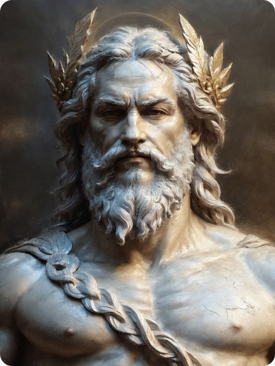

Зевс (др.-греч. Ζεύς, микен. di-we) — в древнегреческой мифологии бог неба, грома, молний, ведающий всем миром. Главный и самый сильный из богов-олимпийцев, третий сын титана Кроноса и титаниды Реи; брат Аида, Геры, Гестии, Деметры и Посейдона. Жена Зевса — это богиня Гера. В римской мифологии он отождествлялся с Юпитером.
Атрибутами Зевса были щит и двусторонний топор (лабрис), иногда орёл; местопребыванием считался Олимп(Зевс-Олимпиец). Зевс мыслился «огнём», «горячей субстанцией», обитая в эфире, владея небом, организующее средоточие космической и социальной жизни.
Кроме того, Зевс распределял добро и зло на земле, вложил в людей стыд и совесть. Зевс — грозная карающая сила, иногда его ассоциируют с судьбой, иногда он сам выступает как существо, подвластное богиням Мойрам — судьбе, року. Зевс обладает способностью предвидеть будущее; он возвещает предначертания судьбы через сновидения, а также с помощью грома и молний. Весь общественный порядок был построен Зевсом, он покровитель городской жизни, защитник обиженных и покровитель молящих, подарил людям законы, установил власть царей, также охраняет семью и дом, следит за соблюдением традиций и обычаев. Вначале существовал лишь вечный, безграничный, темный Хаос. В нем заключался источник жизни мира. Все возникло из безграничного Хаоса - весь мир и бессмертные боги.
Рождение.
Зевс, похищающий Ганимеда (480—470 гг. до н. э.)
Зевс принадлежит к третьему поколению богов, свергших второе поколение — титанов. Отцу Зевса титану Кроносу было предсказано, что ему суждено быть поверженным собственным сыном и, чтобы не быть свергнутым своими детьми, он каждый раз проглатывал только что рождённого женой Реей ребёнка.
Рея решилась, наконец-то, обмануть супруга и втайне родила очередного ребёнка — Зевса. Согласно Павсанию, «перечислить все те местности, которые претендуют на то, чтобы считаться местом рождения и воспитания Зевса, было бы невыполнимо даже для того, кто приступил бы к этому вопросу с полной серьёзностью»[17]. Разные версии мифа называют местом рождения остров Крит (пещеру в горе Дикте[18] либо гору Ида) или Фригию (гора Ида). Кроносу же вместо новорождённого она дала проглотить завёрнутый в пелёнки камень. Пуповина Зевса отпала у города Фены на Крите[19]. Новорождённого Зевса купали в реке Лусий в Аркадии[20]. Согласно Феодору Самофракийскому у Птолемея Гефестиона, родившись, 7 дней непрерывно смеялся, отчего число 7 священно[21].
По критскому варианту мифа, Зевс был отдан на воспитание куретам и корибантам, вскормившим его молоком козы Амалфеи. Также на Крите его кормили пчелиным мёдом[22]. По другой версии, вскормлен козой в местечке Эгий в Ахайе[23]. По преданию, пещеру охраняли стражники и каждый раз, когда маленький Зевс начинал плакать, они стучали копьями в щиты, для того, чтобы плач не услышал Кронос.
Борьба за власть.
Когда Зевс вырос, он сумел распороть живот Кроноса и выпустить своих старших братьев и сестёр на волю, однако не сумел в одиночку его убить. По другой версии, он сделал зелье, которое заставило Кроноса выплюнуть своих старших детей, томившихся в неволе.
По одной из версий, Зевс воспитывался на Наксосе. Когда он отправлялся в поход на титанов, то заметил орла и угадал в нём благое предзнаменование. Когда боги делили пернатых, Зевсу достался орёл[24]. На скипетре Зевса — орёл[25]. Когда Зевс выступил против Кроноса, боги Олимпа заключили союз. Жертвенник, на котором они клялись, они сделали созвездием[26].
Затем вместе с Зевсом боги начали борьбу с Кроносом и остальными титанами, призвав на помощь создавших громы и молнии циклопов. Битва, которая потрясла мир до основания, длилась 10 лет, но не выявила победителя. Тогда Зевс освободил из Тартара сторуких великанов, которые поклялись в верности Зевсу. Наконец титаны были повержены и низвергнуты в Тартар навечно. Но Гея не смирилась с этим и породила в браке с Тартаром Тифона. Однако последний был побежден Зевсом.